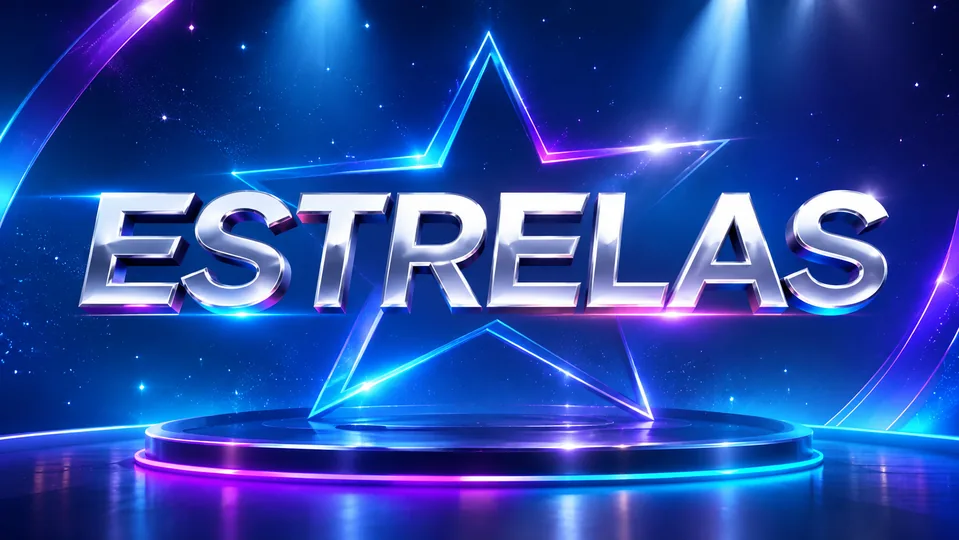

BTV News
Notícias e os principais acontecimentos da actualidade.

A tua televisão, onde estiveres. Acompanha a emissão em directo e descobre os teus programas favoritos.
A tua televisão, onde estiveres.
Quando for publicada uma transmissão em directo no Studio, poderá assisti-la nesta área.
Notícias e os principais acontecimentos da actualidade.

Informação, convidados e temas do quotidiano para começar o dia.

Actualidade e acompanhamento dos acontecimentos que marcam o país.
Futebol, resultados e análise desportiva.

Direitos, deveres e esclarecimentos jurídicos para o dia-a-dia.

Talento, personalidades e entretenimento.

Histórias de amor, celebrações e memórias de casamento.
Arte, cultura e criatividade sem fronteiras.
A BTV é uma estação televisiva moçambicana dedicada à informação, à cultura e ao entretenimento, comprometida com a valorização da identidade nacional e a promoção dos talentos moçambicanos.
Informar, educar e entreter, promovendo a cultura moçambicana e aproximando a televisão das comunidades.
Ser uma referência na televisão moçambicana pela qualidade, criatividade e inovação dos seus conteúdos.

Sob a sua direcção, a BTV aposta na valorização da cultura, na produção audiovisual nacional e no desenvolvimento de uma televisão cada vez mais próxima do público.
É aqui que a informação, a cultura e o entretenimento ganham vida. Conheça os espaços e os bastidores da nossa produção televisiva.

O espaço dedicado à actualidade e aos conteúdos informativos.

Um cenário versátil para diferentes formatos televisivos.
Câmaras, iluminação e equipamentos ao serviço dos nossos programas.

Nos bastidores, onde se coordena a produção e a emissão.
Imagens dos espaços com tratamento visual assistido por inteligência artificial.